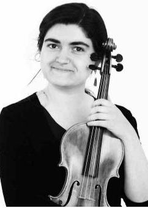

Sylvia Schwartz
Violin Instructor
A musician with a big heart and a sweet tone, Sylvia is equally passionate about bringing music to life as a performer and nurturing creative expression and empowerment through teaching music. She uses a combination of Suzuki approaches, improvisation, Dalcroze-inspired Eurythmics, and Alexander Technique-inspired movement awareness to simultaneously develop fluent musicality, joy in making music, a solid instrumental technique, and musicianship (including reading and theory).
A former sufferer of tendonitis, she has a particular interest in addressing and preventing performance injuries, in both beginning and experienced players.
Sylvia currently performs as a member of Eudaimonia, a period orchestra, and has performed with the Longy Conservatory Orchestra and conservatory chamber ensembles, and the prog/alt rock bands The Fixtures and The Mood Swings. She is an alumna of the Olin Conductorless Orchestra, of which she was Concertmaster and Strings Section Leader; the Boston University Tanglewood Institute; and the Boston Youth Symphony Orchestras, with which she toured Estonia, Latvia, and northern Russia. She has also performed as a member of Chorus pro Musica and the Masterworks Chorale.
Sylvia began Suzuki violin studies at age 6 with Doris Goldman in Stow, MA, and has studied with Laura Bossert, Anna Korsunsky, and Karen Oosterbaan (a pioneer in combining Alexander Technique with violin technique). She has completed Suzuki Violin Teacher Training in Books 1, 2, and 3 with Carol Sykes through the Suzuki School of Newton. She has a Master of Music in Violin Performance from the Longy School of Music of Bard College, studying with Ms. Bossert, and is currently completing a Dalcroze Teaching Certificate. She also holds a B.S. in Engineering from Olin College of Engineering in Needham, MA.